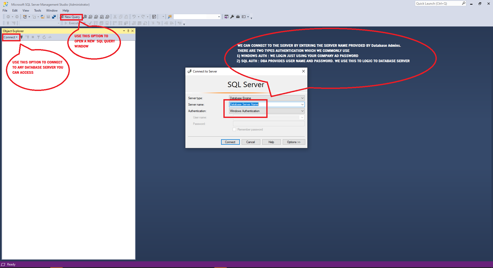

Basics of SSMS
SSMS= Sql Server Managment Studio
We use the Microsoft SSMS in order to connect to the databases and write queries, below are some pictures and option in SSMS
Here is a helpful source from SQL SERVER NET for step by step information to download SQL Server on your system .
Click HereSSMS - All the options present with the application
Here is a screenshot of SSMS, the way we see it once running. Below are some quick options which we use on day to day basis.
SSMS will have lot of options , but we can start of with learning just a few most important - and we eventually catch on.
Once you have installed SSMS, you should be able to write some queries once connected to a DB SERVER.